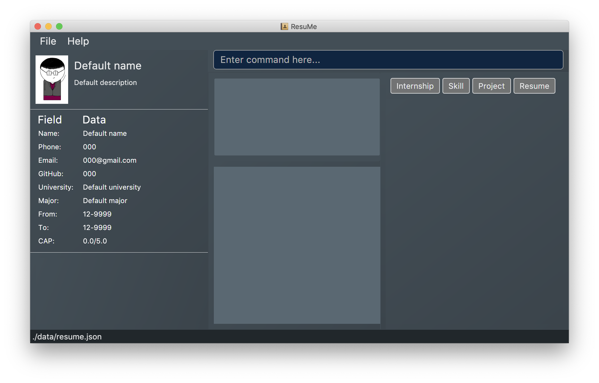
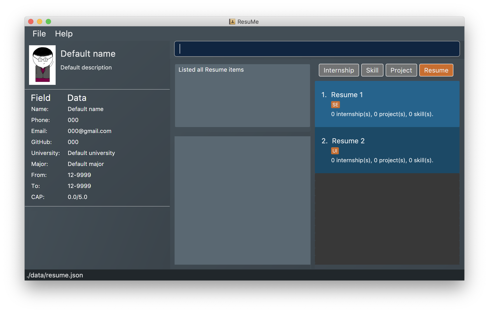
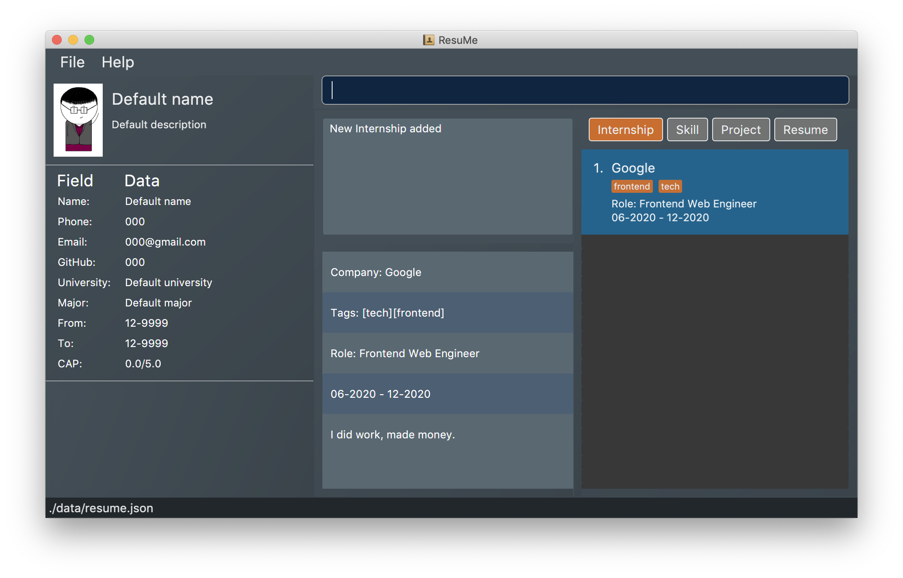
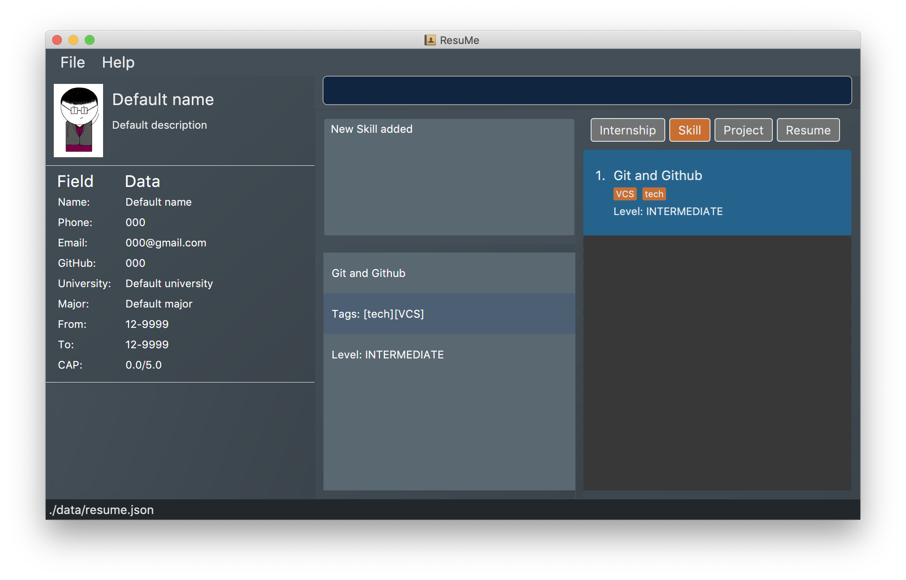

By: CS2103T F10-1 Since: Feb 2020 Licence: MIT
{ start of introduction section written by: Pham Thuy Duong }
- 1. Introduction
- 2. Setting up
- 3. Design
- 4. Implementation
- 5. Documentation
- 6. Testing
- 7. Dev Ops
- Appendix A: Product Scope
- Appendix B: User Stories
- Appendix C: Use Cases
- Appendix D: Non Functional Requirements
- Appendix E: Glossary
- Appendix F: Product Survey
- Appendix G: Instructions for Manual Testing
1. Introduction
This developer guide documents the system design and implementation of ResuMe. We hope that it would be a useful reference for software developers who wish to contribute to the project, or to simply gain deeper insight into our development process and considerations.
{ end of introduction section written by: Pham Thuy Duong }
2. Setting up
Refer to the guide here.
3. Design
3.1. Architecture
The Architecture Diagram given above explains the high-level design of the App. Given below is a quick overview of each component.
The .puml files used to create diagrams in this document can be found in the diagrams folder.
Refer to the Using PlantUML guide to learn how to create and edit diagrams.
|
-
At app launch: Initializes the components in the correct sequence, and connects them up with each other.
-
At shut down: Shuts down the components and invokes cleanup method where necessary.
Commons represents a collection of classes used by multiple other components.
The following class plays an important role at the architecture level:
-
LogsCenter: Used by many classes to write log messages to the App’s log file.
The rest of the App consists of four components.
Each of the four components
-
Defines its API in an
interfacewith the same name as the Component. -
Exposes its functionality using a
{Component Name}Managerclass.
For example, the Logic component (see the class diagram given below) defines it’s API in the Logic.java interface and exposes its functionality using the LogicManager.java class.

{ start of Overall Architecture section written by: Nguyen Chi Hai }
How the architecture components interact with each other
The Sequence Diagram below shows how the components interact with each other for the scenario where the user issues the command delete 1 i/ ski, delete skill at index 1.
delete 1 i/ ski commandThe figure above explains quite clearly how the input of the user is passed into the system through Ui that calls
Logic to make changes in the Model and saves to Storage. However, it may not be immediately clear how the Ui is
then updated to give visual feedback to the User. The updating of the Ui is actually done through a combination
of observable items, lists, and updating of the Ui with data passed through commandResult.
Head to Section 3.2, “UI component” to read more.
How the architecture components interact at start up
The Sequence Diagram below shows how the components interact with each other at start up.

The sections below give more details of each component.
{ end of Overall Architecture section written by: Nguyen Chi Hai }
{ start of ui section written by: Nham Quoc Hung }
3.2. UI component
API : Ui.java
The UI consists of a MainWindow that is made up of parts e.g.CommandBox, ResultDisplay, ItemDisplayList, ItemListPanel, NoteListPanel, UserOverallPane and StatusBarFooter. All these, including the MainWindow, inherit from the abstract UiPart class.
The UI component uses JavaFx UI framework. The layout of these UI parts are defined in matching .fxml files that are in the src/main/resources/view folder. For example, the layout of the MainWindow is specified in MainWindow.fxml
The UI component,
-
Executes user commands using the
Logiccomponent. -
Listens for changes to
Modeldata so that the UI can be updated with the modified data. -
Responds to events raised by various commands and the UI can be updated accordingly.
{ end of ui section written by: Nham Quoc Hung }
3.3. Logic component
API :
Logic.java
-
Logicuses theResumeBookParserclass to parse the user command. -
This results in a
Commandobject which is executed by theLogicManager. -
The command execution can affect the
Model(e.g. adding a new resume). -
The result of the command execution is encapsulated as a
CommandResultobject which is passed back to theUi. -
In addition, the
CommandResultobject can also instruct theUito perform certain actions, such as displaying help to the user.
Given below is the Sequence Diagram for interactions within the Logic component for the execute("delete 1 i/ res") API call.

delete 1 Command
The lifeline for DeleteCommandParser should end at the destroy marker (X) but due to a limitation of PlantUML, the lifeline reaches the end of diagram.
|
{ start of model section written by: Pham Thuy Duong }
3.4. Model component

API : Model.java
The Model,
-
stores a
UserPrefobject that represents the user’s preferences. -
stores the Resume Book data.
-
stores the Resume Book state using
VersionedResumeBookto facilitateundo/redo. -
exposes an
Observablethat contains an internalPersonwith user’s data, and two unmodifiableObservableList<Item>, one forNoteand one forInternship,Project,SkillandResume. -
has the UI bound to its observables so that the UI automatically updates when the data change.
-
does not depend on any of the other three components.
{ end of model section written by: Pham Thuy Duong }
{ start of storage section written by: Nguyen Minh Hoang }
3.5. Storage component
API : Storage.java
The Storage component,
-
can save
UserPrefobjects in json format and read it back. -
can save the
ResumeBookdata in json format and read it back.
{ end of storage section written by: Nguyen Minh Hoang }
3.6. Common classes
Classes used by multiple components are in the seedu.resumebook.commons package.
4. Implementation
This section describes some noteworthy details on how certain features are implemented.
{ start of Resume Edit feature implementation written by: Christian James Welly }
4.1. Resume Edit feature
The Resume Edit feature or redit allows user to modify the content items of the Resume (for example, adding a Skill item or removing an Internship item). It is not to be confused with the edit command, which simply modifies the fields of an Item (such as name).
4.1.1. Current Implementation
The redit command is facilitated by ResumeEditCommand, which extends Command. Therefore, like any other Command classes, it will have an execute method.
Given below is an example usage scenario and how the redit works at each step.
Step 1. The user launches the application, and uses the add command to add several Resume, Internship, Project, and Skill items.
Step 2. The user executes redit 1 int/ 2 command to add the second Internship in the list of Internship items to the first Resume in the list of Resume items.
Step 3. This calls ResumeBookParser#parseCommand(), which would create a new ResumeEditCommandParser object and call the ResumeEditCommandParser#parse() method.
Step 4. A new ResumeEditCommand object is created. It contains the index of the Resume that is to be modified, and three Optional<List<Integer>> representing the indices of Internship, Project and Skill to be modified into the Resume. In this example, the Project and Skill indices are represented by empty Optional because the user did not specify any project or skill indices. (This will be further elaborated in the next section)
Step 5. The ResumeEditCommand#execute() method is called with the current model. A copy of the Resume is created and its content is set to refer to the Internship, Project and Skill items specified by the user.
Step 6. A new ResumeEditCommandResult object, which contains the edited copy of the Resume, is created and returned.
The following sequence diagram shows the process of invokation for redit:
Representation of indices after parsing
In Step 4. above, it is mentioned that Optional<List<Integer>> is used to represent the indices of Internship, Project, and Skill items. This section elaborates further on the representation.
To explain the various representations, we will use the example of executing redit 1 int/ 2 3 proj/:
-
A non-empty
List<Integer>wrapped withOptionalis used to represent the indices when the user specifies both the item prefix and the item indices. In the above example, indices ofInternshipitems will be represented by aList<Integer>of2and3, wrapped withOptional. -
An empty
List<Integer>wrapped withOptionalis used to represent the indices when the user specifies the item prefix, but no item indices are given. In the above example, indices ofProjectitems will be represented by an emptyList<Integer>wrapped withOptional. -
An empty
Optionalis used to represent the indices when the user does not specify the item prefix. In the above example, indices ofSkillitems will be represented with an emptyOptional.
The three representations are used because redit facilitates the following:
-
If the prefix and indices are both present, the resume will be modified to contain the content items of that prefix at the specified indices. In the same example above,
Resumeat index 1 will be modified to containInternshipitems at indices 2 and 3. -
If the prefix is specified but no indices are present, the resume will be modified to remove all the items of that prefix. In the example above,
Resumeat index 1 will be modified to have all itsProjectitems removed. -
If the prefix is not specified, the resume will have the items of that prefix unmodified. In the example above,
Resumeat index 1 will not have itsSkillitems modified. If originally there were 4Skillitems, then after the command execution, it will still have 4Skillitems.
The following activity diagram summarises the execution of ResumeEditCommand:
4.1.2. Design Considerations
Aspect: Whether ResumeEditCommand should extend EditCommand
-
Alternative 1 (current choice):
ResumeEditCommanddoes not extendEditCommand, but extendsCommand.-
Pros: Since
reditmodifies the content items of theResumeand not theResumedetails, this reduces the size of responsibility forEditCommand. Each command class now does one and only one thing so Single Responsibility Principle is observed. -
Cons: Unable to exploit polymorphism if there is similarity with the
EditCommand. From user’s point-of-view, it may also be confusing to have bothreditandedit.
-
-
Alternative 2:
ResumeEditCommandextendsEditCommand-
Pros: Some methods in
EditCommandmay be able to be inherited byResumeEditCommand, reducing code duplication. -
Cons: If the functionality of
ResumeEditCommandis limited, it could have been combined withEditCommandentirely. If the intention ofEditCommandis to change theItemdetails (such as name), andResumeEditCommandonly modifies the content items of theResume(without changing any details), then this is also a violation of the Liskov Substitution Principle.
-

Aspect: Representation of indices after parsing
-
Alternative 1 (current choice): Usage of
Optional<List<Integer>>-
Pros: The 3 different cases is naturally represented when
List<Integer>is wrapped withOptional. There is also an enhanced safety, reducing risk ofNullPointerException. -
Cons: More checks are required to ensure that the
Optionalis not empty before getting its value.
-
-
Alternative 2: Usage of
nullandList<Integer>-
Pros: Implementation is much simpler, and code becomes much more concise.
-
Cons: High risk of getting a
NullPointerExceptionifnullis not handled carefully.
-
{ end of Resume Edit feature implementation written by: Christian James Welly }
{ start of Tag Pull feature implementation written by: Christian James Welly }
4.2. Tag Pull feature
The Tag Pull feature is similar to Resume Edit feature in the sense that it modifies the content items of the Resume. Unlike Resume Edit which modifies using the content item indices, the Tag Pull feature modifies the resume by adding items with the specified tags on top of existing items in the Resume.
4.2.1. Current Implementation
The tagpull command is facilitated by TagPullCommand, which extends Command. Therefore, like any other Command classes, it will have an execute method.
Given below is an example usage scenario and how the tagpull works at each step.
Step 1. The user launches the application, and uses the add command to add several Resume, Internship, Project, and Skill items.
Step 2. The user executes tagpull 2 #/ tech command to add all items that have been tagged with tech to the first Resume in the list of Resume items.
Step 3. This calls ResumeBookParser#parseCommand(), which would create a new TagPullCommandParser object and call the TagPullCommandParser#parse() method.
Step 4. A new TagPullCommand object is created. It contains the index of the Resume that is to be modified, and the tags of the items which the user wants to add. In this example, it will only have the tech tag.
Step 5. The TagPullCommand#execute() method is called with the current model. A copy of the Resume is created and all the items with matching tags are retrieved from model. The content of the copied Resume is updated to now contain all the items with matching tags, on top of existing ones.
Step 6. A new TagPullCommand object, which contains the edited copy of the Resume, is created and returned.
The following sequence diagram shows the process of invokation for tagpull:

The following activity diagram summarises the execution of tagpull:

4.2.2. Design Considerations
Aspect: Integrating Tag Pull to Resume Edit
-
Alternative 1 (current choice): Separating
reditandtagpull-
Pros: Separation of concerns.
redithandles updates ofResumeusing indices andtagpullhandles updates ofResumeusing tags. -
Cons: There is some code duplication due to similarities in behaviour.
-
-
Alternative 2: Combine
reditwithtagpull, making use of#/as prefix forreditcommand-
Pros: It may be intuitive for user to only have a single command that handles modification of
Resume -
Cons: The implementation of
reditbecomes much more complicated as various combinations of input has to be considered. For example, considerations of what the expected behaviour should be if both indices and tags are given as arguments.
-
{ end of Tag Pull feature implementation written by: Christian James Welly }
{ start of Implementation of Command section written by: Nguyen Chi Hai }
4.3. Implementation of Command classes
4.3.1. Current Implementation
Currently, there are several object Type which are subclasses of Item, namely Resume, Internship, Skill, Note
and Project.
Commands that are dependent on item Type, namely AddCommand, DeleteCommand, EditCommand, FindCommand,
ListCommand, SortCommand, and ViewCommand are implemented as abstract classes that inherits from Command and would have a
concrete classes that corresponds to each item Type. For example, AddCommand is an abstract class that
AddInternshipCommand and AddSkillCommand inherits from.
Commands that are not dependent on item Type (eg. EditUserCommand, ResumeEditCommand) are implemented as concrete
classes that inherits directly from Command.
From this point onwards, for the sake of clarity in our discussion, commands that are dependent on type will be called ABCCommand whereas those who are independent of type will be called XYZCommand.
The following is the class diagram for Command and its subclasses.

XYZCommand is independent of Type whereas ABCCommand is dependent on Type.4.3.2. Design Considerations
Aspect: Whether to separate the ABCCommand that is dependent on type into many ABCItemCommand
Alternative 1 (current choice): ABCCommand is separated into many ABCItemCommand. Parser will parse user input and create the exact ABCItemCommand.
The following is the activity diagram for execution of AddResumeCommand when the user adds a resume.

AddResumeCommandThis leads to a cleaner execution method of each ABCItemCommand as each command class has a clear goal.
-
Pros: More OOP. Each
ABCItemCommandhas its own and distinct functionality. EachABCItemCommandhas more flexible behaviour and can be easily changed as required. -
Cons: Many classes have to be maintained.
Alternative 2: ABCCommand is not separated into many ABCItemCommand.
The following is the activity diagram for execution of AddCommand if AddCommand is not separated into AddResumeCommand,
AddNoteCommand, AddInternshipCommand, AddProjectCommand, and AddSkillCommand when the user adds a resume.
AddCommandImplementing ABCCommand this way forces execute to be switch-cased.
Functionality of execute would vary depending on the item Type.
-
Pros: Only one command is required, regardless of number of items. Low overhead.
-
Cons: Long
executemethod due to the need for handling the different item types as seen from the logic of the activity diagram. ItemTypewould also need to be stored. Undesirable variable functionality ofexecutecommand depending on theTypefield despite it being from the same class. ie.AddItemcan addInternshipto theInternshiplist, or addSkilltoSkilllist.
{ start of observable-user section written by: Nguyen Minh Hoang }
{ end of Implementation of Command section written by: Nguyen Chi Hai }
4.4. Usage of Observable and Observer
4.4.1. Reason for Implementation
ResuMe inherits a lot of implementations from AddressBook Level 3, one of which is the usage of ObservableList that
allows a list of item to be automatically updated in the UI every time a change is made to the underlying model.
When we added functionality for a user profile and sequentially a user profile window, the need for auto UI update surfaced.
We could not use the existing implementation since it is only for ObservableList. The initial rectification is to explicitly
call a UI update, but that requires the UI to directly reach out to the Model to get the user profile data. This seriously
breached many Software Engineering principles and we decided to amend it.
4.4.2. Design Considerations
-
Alternative 1: Use
ObservableandObserver-
Pros: Is way easier to implement and does not disrupt the existing code base much.
-
Cons: The two classes are deprecated in
Java 9due to various shortcomings.
-
-
Alternative 2: Use
java.beanspackage-
Pros: Is designed to replace
ObservableandObserverand is currently the industry standard. -
Cons: Is harder to implement and would require a lot of refactoring of the existing codes.
-
4.4.3. Conclusion
After deliberation we decided to go with the first alternative, due to time constraint and to avoid the potential
havoc that would arise from refactoring the code base. In addition, the limitations of Observable and Observer are
not likely to manifest considering the usage scenarios for our application (offline and not multi-threaded).
We would, however, make it a priority to change the implementation to Alternative 2, since we want to scale up our application and it is not recommendable to build it on top of something that is no longer supported.
{ end of observable-user section written by: Nguyen Minh Hoang }
{ start of me section written by: Nham Quoc Hung }
4.5. Me feature
This feature intends to serve a single user of the application to sets and updates his/her user profile. The profile is then reflected in the user’s profile panel.
4.5.1. Implementation
me is supported by the EditUserCommand, where it allows the main user to modify and update user information that
includes display picture, name, description, phone, email, github, university, major, from, to, cap.
Given below is an example usage scenario:
Step 1. User launches the ResuMe application for the first time. The user profile data is not yet edited and will thus be initialized with the initial json data stored.
Step 2. User executes me dp/ FILEPATH n/ NAME d/ DESCRIPTION p/ PHONE e/ EMAIL g/ GITHUB u/ UNIVERSITY m/ MAJOR f/ FROM t/ TO c/ CAP
so as to update the Person object currently stored in Model as well as Storage.
me dp/ /Users/nhamquochung/Desktop/test.png n/ HUNG d/ I am an aspiring software engineer. p/ 91648888 e/ nhamhung.gttn@gmail.com g/ nhamhung u/ National University of Singapore m/ Computer Science f/ 08-2018 t/ 05-2022 c/ 4.0 5.0
Step 3. The user profile panel will be updated accordingly.
Note: To set customised user picture, the file path of your display picture has to be absolute and from the root directory of your computer.
Command sequence:
-
User type
me [dp/ FILEPATH] [n/ NAME] …command in the command box. -
Command is executed by Logic Manager.
-
Command is parsed by
ResumeBookParserwhich identifies what type of command it is. AnEditUserParseris returned accordingly. -
EditUserParserextracts out different fields specified in the command based on their prefixes and returns anEditUserCommandwith anEditUserDescriptorobject parameter which contains information on which attributes of user data is updated or kept unchanged. -
EditUserCommandthen callsexecute()which first gets the existingPersonin Model as theuserToEdit. It then creates a neweditedUserbased onEditUserDescriptorand set the currentuserToEditin Model toeditedUser. Afterwards, aCommandResultis returned to Logic with data and feedback to be displayed to the user. -
Feedback acknowledgement is displayed by
ResultDisplay. User profile changes are displayed automatically as the userPersonis wrapped around by a JavaFx Observable as anObservablePersonso that the user profile 's display is always updated after execution of every command.
The following sequence diagram shows how the me feature allows user to edit his/her user profile:

4.5.2. Design Considerations
Aspect: Whether ResumeEditCommand should extend EditCommand
Alternative 1 (current choice): EditUserCommand does not extend EditCommand, but extends Command.
This design is chosen because while EditCommand takes into account the item index as all items are stored in a list in Model, EditUserCommand
only concerns with a single Person who is the main user.
-
Pros: Since user is a
Personwhich is not anItem, it would be better to have a separateEditUserCommandas this is in line with the Liskov Substitution Principle where allEditItemCommandalready extendsEditCommandin order to handle the accordingItemwithout knowing it. So this does not forceEditCommandto handle aPersonas well. -
Cons: Unable to exploit polymorphism even though there is similarity between
EditUserCommandandEditCommand.
Alternative 2: EditUserCommand extends EditCommand
-
Pros: If we intend to have multiple
Personthen perhaps we can extendEditCommanddue to the presence ofIndexattribute. In this case, even thoughPersonis not anItem, there are many shared similarity between the two edit commands. -
Cons: In terms of design, this is not a good practice as
Personis not intended to be anItemwith separate attributes and is not part of aResume.
4.5.3. Aspect: Whether to have both AddUserCommand and EditUserCommand
Alternative 1 (current choice): A default user data is initialized and displayed at first start-up. User can update it afterwards.
The main concern initially was how to automatically updating user profile after each changes is made. As such, we thought of
storing the Person in an ObservableList so that Ui can be updated by adding and removing the Person. However, we now
use Javafx Observable to create an ObservablePerson class that can observe changes to the Person so that related Ui components
can be automatically reloaded after every command.
-
Pros: This design is chosen because
EditUserCommandonly concerns with a singlePersonobject in the Model as the sole user. There is no need forAddUserCommandasEditUserCommandwhen executed will always create a newPersonobject to replace the existing one and update the Model and Ui accordingly with the use ofObservable. -
Cons: User may expect to have
addcommand intuitively.
Alternative 2: Have both AddUserCommand and EditUserCommand
-
Pros: User can intuitively treat
addas adding in a newuserandeditas just modifying an existinguser. -
Cons: There will be code duplication and the one single user logic is not fully utilised to reduce code, especially given the use of
Observable.
{ end of me section written by: Nham Quoc Hung }
{ start of note section written by: Nham Quoc Hung }
4.5.4. Note taking feature: take simple notes or reminders
Implementation
This feature utilises a Note class that extends Item. It provides necessary functionality related to note taking in order to
support the user in his/her resume building and management.
Given below is an example usage scenario:
Scenario 1. Add a reminder note: add i/ note
Step 1. The user launches the ResuMe application. Data will be loaded from storage to fill the note list in model.
Step 2. The user executes add i/ note n/ NAME t/ TIME #/ TAG. In ResumeBook, the note list is implemented as a UniqueItemList
which implements an add() method that will always check if this note already exists in current note list. This check is done
by iterating through every note in the list and compare to this note using an isSame() method that checks for the same
note name and time. If a same note already exists, ResuMe throws a duplicate error message.
Step 3. If no error is thrown, the note will be created, defaulted as not done and added to the current note list with according Ui update.
Scenario 2. Edit an existing note: edit i/ note
Step 1. Once data has been loaded from storage to model, the list of notes in the ResumeBook could either contain some
notes, or is empty.
Step 2. The user executes edit INDEX i/ Note [n/ NAME] [t/ TIME] [#/ TAG]. If the specified note index is invalid or out of bound,
ResuMe will throw an invalid index error message.
Step 3. If no index error is thrown, edited values will be captured by an EditNoteDescriptor object and the note at the specified index
will be extracted to be updated according to the fields captured by this descriptor. However, if this note to
be edited becomes another similar note in the list, a duplicate item error will be thrown.
Step 4. If no duplicate error is thrown, ResuMe will replace the note at this index with its edited version.
The following activity diagram summarises this process when user executes edit i/ note command:
Scenario 3. Mark an existing note as done: done
Step 1. Given the currently displaying list of notes, the user executes done INDEX. If the specified note index is invalid
or out of bound, ResuMe throws an error message.
Step 2. The corresponding note at this index is marked as done with an Ui update from a tick to cross. If the note has
already been marked as done, a user feedback message is displayed to notify the user.
Design Considerations
Aspect: Whether this feature is necessary in supporting the user
-
Alternative 1 (current choice): Note taking is implemented with functionality to
add,edit,view,list,find,delete,sortanddone.
This design is chosen because it can be an important part of overall user experience in managing his/her resumes. It is an enhancement to existing features that deal strictly with building resumes, by allowing the user to jot down short entries which can serve as simple reminders for them.
-
Pros: User may work on crafting his/her
Internship,ProjectandSkillwith a lot of writing and summarising past experiences. As such, this brainstorming process tends to be over a long time. Note taking thus makes it easier for user to resume his/her work. -
Cons: Note taking may seem like an unrelated feature to building resumes. Thus, it may be underutilised if the user only focuses on managing resumes.
-
Alternative 2: Remove note taking feature from the application
-
Pros: Make ResuMe more inline with being a resume building application.
-
Cons: May miss out on a portion of users who would appreciate this feature, especially those with a habit of jotting down notes.
Aspect: Whether Note class should extend Item class
-
Alternative 1 (current choice):
Noteis also anItem
This design is chosen because note taking feature is intended to have similar Command to a typical Item such as AddCommand, EditCommand and SortCommand.
As such, by extending Item, Note can inherit attributes such as Index and Tag as well as being able to kept as a
UniqueItemList in Model.
-
Pros: Reduce code duplication in achieving the same functionality between
Notecommands and otherItemcommands.Notecan also inherit important attributes such asindexandtagwhich it intends to have. -
Cons: Right now other subclasses of
ItemareInternship,Project,SkillandResumewhich are all relevant to building aResume. Details from these items will be included in the actual resume PDF generated. As such,Noteas a subclass ofItemcan add confusion because it is not part of a resume. -
Alternative 2: Implement a
Noteclass which does not inherit fromItem -
Pros: Make it more independent and do not interfere with the design considerations for other resume-related items.
-
Cons: However, this would lead to a significant code duplication to achieve the same purpose. This could violate
Don’t Repeat Yourselfprinciple which increases the amount of work required to test the application.
{ end of note section written by: Nham Quoc Hung }
{ start of export section written by: Pham Thuy Duong }
4.6. Export Feature
The Export Feature supports two main actions: previewing the content of a Resume item, and
then generating a .pdf file from it.
4.6.1. Previewing a resume: rpreview
Implementation
rpreview is supported by the new Command, ResumePreviewCommand and the additional method toPreview() implemented
in Internship, Project and Skill, which return the content of the item in textual format.
Given below is an example usage scenario:
Step 1. The user launches the ResuMe application. After loading data from storage to the application memory, the list of
resumes in the ResumeBook could either contain some resumes, or is empty.
Step 2. The user executes rpreview INDEX. If the specified resume INDEX is out of bound, ResuMe throws an error message.
Step 3. The application retrieves the correct Resume item and calls toPreview() on the items contained in that resume.
The following activity diagram summarises what happens when a user executes rpreview command:
Aspect: Where rpreview is displayed
-
Alternative 1 (current choice): Displays in a separate preview pop-up window.
-
Pros: The preview is separated from the application and does not clutter the application view. It is also no longer confined to a small space and hence improves readability.
-
Cons: Additional non-command-line action needed to close the pop-up window after previewing.
-
-
Alternative 2: Display in the same panel as
view-
Pros: No significant change to UI component.
-
Cons: Multiple commands needed if user finds out about a typo in an item, wants to view the item in details, fix the typo and then check the preview again to ensure there is no more error.
-
-
Alternative 3: Create a separate preview box to display the resume preview. Additionally, this box could be implemented such that it automatically updates when the content of the
Resumeitem is edited.-
Pros: User can see the resume preview in the preview box, and the item details in the view box at the same time, hence saving time switching between views.
-
Cons: Too many panels could be confusing for the user to navigate. The space is also often wasted since user does not need to use
rpreviewregularly.
-
4.6.2. Generating a .pdf file from a resume: rgen
Implementation
This feature utilises the external Apache Pdf Box library. When using rgen, the user could specify the desired name of
the generated file, which will be saved in the root directory of the project.
The executing of rgen is facilitated by an addition PdfBuilder class, which implements the following main operations:
-
addPage()- starts a new page in the.pdffile. This method is called dynamically to fit the content of the resume to be generated. -
addPersonalDetails()- adds the relevant resume and user details to the.pdffile. -
addInternships(),addProjects()andaddSkills()- adds the resume content to the.pdffile in the same order that they appear in the resume. If a section is empty, it will not be added to the output file.
Given below is an example usage scenario:
Step 1. The user launches ResuMe. After loading data from storage to the application memory, the list of resumes in the
ResumeBook could either contain some resumes, or is empty.
Step 2. The user executes rgen INDEX n/ FILE_NAME. If the specified resume INDEX is out of bound, ResuMe throws an error message.
Step 3. The application retrieves the correct Resume item, create a new .pdf file and populates it with the corresponding
items inside the Resume.
The following activity diagram summarises what happens when a user executes rgen command:

Detailed steps are shown in the sequence diagram below:
4.6.3. Design Considerations
Aspect: How rgen executes
-
Alternative 1 (current choice): Generate
.pdffile by iteratively addingitemscontained inresume.-
Pros: Better control of the output layout, as the position and formatting of each section could be set individually. Additionaly,
rgenis dynamic, in the sense that even without callingrpreviewevery time, the generated file will be consistent with any item update. -
Cons: Coupled with
rpreview, the content of aResumemust be read twice every time the user wishes to export.
-
-
Alternative 2: Generate
.pdffile directly from the previewed text output byrpreview-
Pros: Faster and simpler
rgen -
Cons: Limited formatting options (font type, font size and page layout) since the whole document is now input as one long string of text.
rgenimplemented this way is also static, and might not reflect the most updated content if there are item changes afterrpreviewis called.
-
{ end of export section written by: Pham Thuy Duong }
{ start of undo-redo section written by: Nguyen Minh Hoang }
4.7. Undo/Redo feature
4.7.1. Implementation
The undo/redo mechanism is facilitated by VersionedResumeBook.
It extends ResumeBook with an undo/redo history, stored internally as an ResumeBookStateList and currentStatePointer.
Additionally, it implements the following operations:
-
VersionedResumeBook#commit()— Saves the current resume book state in its history. -
VersionedResumeBook#undo()— Restores the previous resume book state from its history. -
VersionedResumeBook#redo()— Restores a previously undone resume book state from its history.
These operations are exposed in the Model interface as Model#commitResumeBook(), Model#undoResumeBook() and Model#redoResumeBook() respectively.
Given below is an example usage scenario and how the undo/redo mechanism behaves at each step.
Step 1. The user launches the application for the first time. The VersionedResumeBook will be initialized with the initial resume book state, and the currentStatePointer pointing to that single resume book state.
Do note that all resume books begin with its display type set to an empty string. Display type of a resume book determines which item
list will be selected for display (e.g. if the display type is "res" - an alias for resume, then the list of all resumes will be selected).

Step 2. The user executes delete 5 i/ res command to delete the 5th resume in the resume book. The delete command calls Model#commitResumeBook(), causing the modified state of the resume book after the delete 5 i/ res command executes to be saved in the resumeBookStateList, and the currentStatePointer is shifted to the newly inserted resume book state.
In addition, the display type of the current resume book will be set to resume.

Step 3. The user executes add i/ int n/ RESUME Internship … to add a new internship. The add command also calls Model#commitResumeBook(), causing another modified resume book state to be saved into the resumeBookStateList. This resume
book has its display type set to int - which is an alias for internship.

If a command fails its execution, it will not call Model#commitResumeBook(), so the resume book state will not be saved into the resumeBookStateList.
|
Step 4. The user now decides that adding the internship was a mistake, and decides to undo that action by executing the undo command. The undo command will call Model#undoResumeBook(), which will shift the currentStatePointer once to the left, pointing it to the previous resume book state, and restores the resume book to that state.
This resume book state, however, does not has the display type that we want. Thus, VersionedResumeBook#setItemsToDisplay() will be called to set the current resume book’s
display type to that of the resume book state one to the right of the currentStatePointer - which corresponds to the command that just has been undone.
Note: resumeBookStateList stores resume book states as ReadOnlyResumeBook, thereby allowing these states to stay unmodified throughout
their life cycle. Operations like Model#commitResumeBook(), Model#undoResumeBook(), and VersionedResumeBook#setItemsToDisplay() will not
change any of these state at all. Immutable state like this is desirable because it gives rise to fewer bugs and fewer unexpected behaviours.

If the currentStatePointer is at index 0, pointing to the initial resume book state, then there are no previous resume book states to restore. The undo command uses Model#canUndoResumeBook() to check if this is the case. If so, it will return an error to the user rather than attempting to perform the undo.
|
The following sequence diagram shows how the undo operation works:

The lifeline for UndoCommand should end at the destroy marker (X) but due to a limitation of PlantUML, the lifeline reaches the end of diagram.
|
The redo command does the opposite — it calls Model#redoResumeBook(), which shifts the currentStatePointer once to the right, pointing to the previously undone state, and restores the resume book to that state.
If the currentStatePointer is at index resumeBookStateList.size() - 1, pointing to the latest resume book state, then there are no undone resume book states to restore. The redo command uses Model#canRedoResumeBook() to check if this is the case. If so, it will return an error to the user rather than attempting to perform the redo.
|
Step 5. The user then decides to execute the command list i/ ski. Commands that do not modify the resume book, such as list, will usually not call Model#commitResumeBook(), Model#undoResumeBook() or Model#redoResumeBook(). Thus, the resumeBookStateList remains unchanged.
Here we also see how the stored resume book states are immutable. list i/ ski causes the display type of the current resume book to switch to skill (whose alias is "ski"),
while the resume book state pointed to by the currentStatePointer still maintains its display type (which is resume).

Step 6. The user executes sort i/ ski order/ name, which calls Model#commitResumeBook(). Since the currentStatePointer is not pointing at the end of the resumeBookStateList, all resume book states after the currentStatePointer will be purged.
We designed it this way because it no longer makes sense to redo the add i/ int … command. This is the behavior that most modern desktop applications follow.

The following activity diagram summarizes what happens when a user executes a new command:
4.7.2. Design Considerations
Aspect: How undo & redo executes
-
Alternative 1 (current choice): Saves the entire resume book.
-
Pros: Easy to implement. Easy to understand.
-
Cons: May have performance issues in terms of memory usage.
-
-
Alternative 2: Individual command knows how to undo/redo by itself.
-
Pros: Will use less memory (e.g. for
delete, just save the item being deleted). -
Cons: We must ensure that the implementation of each individual command is correct. It is further complicated by the fact that there is an
add,delete,edit, andsortcommand for each item type. Also, Separation of Concerns Principle is violated as in essence, theundo()method of a command is doing more than what the command is responsible for, e.g. undoing adeletecommand is essentially performing anaddcommand.
-
Aspect: Data structure to support the undo/redo commands
-
Alternative 1 (current choice): Use a list to store the history of resume book states.
-
Pros: Very straightforward. Developers, even the novice ones, can easily understand and pick up if they wish to improve upon our application.
-
Cons: We need handle the
currentStatePointeraccurately; this is further complicated as we also need to reach to the undone resume book state to retrieve the correct display type for the current resume book.
-
-
Alternative 2: Use
HistoryManagerfor undo/redo.HistoryManagerwill contain two stacks:UndoStackandRedoStack. We push a command into the former stack when it is executed; when anundois performed, we pop the top of theUndoStackand store the command in theRedoStack.-
Pros: We do not need to maintain a separate list, and just reuse what is already in the codebase. We also just need to store the history of commands as opposed to the entire resume book.
-
Cons: Handling of the stacks can be confusing, especially since there are commands that make no change to the model and thus are not (and should not be) stored.
editanddeleterequire the old-versioned item to be stored as well so that it can be restored whileadddoes not, thereby affecting consistency.
-
4.7.3. [Proposed] Improvements for Undo/Redo
A new function can be added that allows users to navigate resume book states. This is very possible because we can already store all these states and can map them to keys easily. This new function can let user traverse between resumes without needing to undo or redo too many times.
A better data structure - like a search tree - can be used in place of a list. If the above proposed change is taken into consideration, then it is desirable to improve search time for a resume book state, from worst case linear to worst case logarithmic.
{ end of undo-redo section written by: Nguyen Minh Hoang }
{ start of data-encryption section written by: Nguyen Minh Hoang }
4.8. [Proposed] Data Encryption
Data encryption can be implemented in the future versions.
Aspect: How data encryption will be implemented
-
Alternative 1: Encrypt and store data locally.
-
Pros: Easy to implement. There are many existing encryption libraries that can be used.
-
Cons: Performance issues may arise because every call to save to storage requires encrypting a lot of data. Security threat is still present if we store the encryption key in the same machine.
-
-
Alternative 2: Store data outside the user’s machine and issue them access token.
-
Pros: Data is not bound to one machine and can be restored if the user forgets their credentials. If a DBMS is used then there are additional benefits to storage functionality as well.
-
Cons: We need to generate access tokens and check them. We also need to change the current implementation to work with external storage.
-
{ end of data-encryption section written by: Nguyen Minh Hoang }
4.9. Logging
We are using java.util.logging package for logging. The LogsCenter class is used to manage the logging levels and logging destinations.
-
The logging level can be controlled using the
logLevelsetting in the configuration file (See Section 4.10, “Configuration”) -
The
Loggerfor a class can be obtained usingLogsCenter.getLogger(Class)which will log messages according to the specified logging level -
Currently log messages are output through:
Consoleand to a.logfile.
Logging Levels
-
SEVERE: Critical problem detected which may possibly cause the termination of the application -
WARNING: Can continue, but with caution -
INFO: Information showing the noteworthy actions by the App -
FINE: Details that is not usually noteworthy but may be useful in debugging e.g. print the actual list instead of just its size
4.10. Configuration
Certain properties of the application can be controlled (e.g user prefs file location, logging level) through the configuration file (default: config.json).
5. Documentation
Refer to the guide here.
6. Testing
Refer to the guide here.
7. Dev Ops
Refer to the guide here.
{ start of product-scope section written by: Pham Thuy Duong }
Appendix A: Product Scope
Target user profile:
-
is a University student looking for internship or job
-
has a need to manage a significant number of personal experiences and resumes for different purposes
-
prefer desktop apps over other types
-
can type fast
-
prefers typing over mouse input
-
is reasonably comfortable using CLI apps
Value proposition: build and manage resumes faster than a typical mouse/GUI driven app
{ end of product-scope section written by: Pham Thuy Duong }
{ start of User Stories section written by: Nguyen Chi Hai }
Appendix B: User Stories
Priorities: High (must have) - * * *, Medium (nice to have) - * *, Low (unlikely to have) - *
| Priority | As a … | I want to … | So that I can… |
|---|---|---|---|
|
user |
manage and customise different resumes |
use different resumes for different companies |
|
user |
create a resume file |
print it |
|
user |
add to and remove 'items' from a certain resume |
|
|
user |
add, edit, and remove 'items' |
|
|
user |
preview my resume |
check for mistakes in a resume before generating it |
|
user |
search for items containing certain keywords |
find items that are relevant to my current need |
|
user |
see all the 'items' I’ve added |
|
|
user |
see all my resumes |
manage them in a centralised location |
|
user |
categorise the 'items' I’ve added |
to ensure my resume will have 'items' of different types |
|
new user |
view more information about various commands |
learn to use new commands |
|
careless user |
undo my previous command |
skip the step of manually editing or deleting them. |
|
busy user |
auto-format my resumes |
'items' refers to a resume field of type project, skill, internship, note and resume.
{ end of User Stories section written by: Nguyen Chi Hai }
Appendix C: Use Cases
(For all use cases below, the System is the ResumeBook and the Actor is the user, unless specified otherwise)
Use case: Edit an item
MSS
-
User requests to list all items or only items of a specific
TYPE -
ResuMe shows a list of corresponding items
-
User checks for the
indexof a specific item in the list to edit -
User requests to edit a specific item in the list
-
ResuMe updates that item and displays edited item to user
Use case ends.
Extensions
-
3a. The
indexgiven by user does not match any item of type-
3a1. ResuMe shows an error message
Use case: Find item(s)
-
MSS
-
User enters
find KEYWORDwithout specifying aTYPE -
ResuMe displays all items whose names contain the
KEYWORD -
If user enters
find KEYWORD i/TYPE -
ResuMe displays only items of the
TYPEwhose names contain theKEYWORDUse case ends.
Extensions
-
1a. None of the items contain the
KEYWORD.-
1a1. ResuMe shows an error message.
Use case: Delete an item
-
MSS
-
User requests to list all items or only items of a specific
TYPE -
ResuMe shows a list of corresponding items
-
User checks for the
indexof a specific item in the list to delete -
User requests to edit a specific item in the list
-
ResuMe deletes that item from the list and displays deleted item to user
Use case ends.
Extensions
-
2a. The list is empty.
-
Use case ends.
-
-
3a. The given
indexis invalid.-
3a1. ResuMe shows an error message.
-
Use case resumes at step 2.
-
{More to be added}
{ start of nfr section written by: Pham Thuy Duong }
Appendix D: Non Functional Requirements
-
The system should work on any mainstream OS as long as it has Java
11or above installed. -
The system should work on both 32-bit and 64-bit environments.
-
The system should be able to support at least 10 resumes per user, 20 items per resume, and 200 resume items in total.
-
Data should be stored locally such that users can access them (either through the application or by directly accessing the data file) without any network connection.
-
The system should response within two seconds for a normal item query, and five seconds for a pdf generation request.
-
The system should be usable by a novice who has never used a resume management application before.
-
A user with some familiarity with Command Line Interface (CLI) should be able to accomplish most of the tasks faster using commands than using the mouse to navigate the Graphic User Interface (GUI).
-
The product is not required to handle the printing of resumes.
{ end of nfr section written by: Pham Thuy Duong }
{ start of glossary section written by: Pham Thuy Duong }
Appendix F: Product Survey
Product Name
Author: …
Pros:
-
…
-
…
Cons:
-
…
-
…
{ start of Manual Testing section written by: Nguyen Chi Hai }
Appendix G: Instructions for Manual Testing
Given below are instructions to test the app manually.
| These instructions only provide a starting point for testers to work on; testers are expected to do more exploratory testing. |
G.1. Launch and Shutdown
-
Initial launch
-
Download the jar file and copy into an empty folder
-
Double-click the jar file
Expected: You are supposed to see this GUI, with default values for user details, and two empty resumes, enterlist i/ resto check it out. The window size may not be optimum.Figure 26. Initial view when jar file runs
Figure 27. Expected view after running the commandlist i/ resto show all resumes -
-
Saving window preferences
-
Resize the window to an optimum size. Move the window to a different location. Close the window.
-
Re-launch the app by double-clicking the jar file.
Expected: The most recent window size and location is retained.
-
-
Shutting down the program
-
To exit the program, you can enter the command
exitor click the red close button, don’t worry all your data is already saved.
-
G.2. Adding items
-
Adding an internship.
-
This test case assumes that the internship list is empty. It does not have to be, but there must not be a duplicate internship with the internship we’re about to add.
-
Test case adding an internship:
add i/ int n/ Google r/ Frontend Web Engineer f/ 06-2020 t/ 12-2020 d/ I did work, made money. #/ frontend #/ tech
Expected: An internship item is added to the list of internships and the list view changes to list of internships. Data box is filled with the data of the internship that you just added. -
Test case adding an duplicate internship (do this after part b):
add i/ int n/ Google r/ Frontend Web Engineer f/ 06-2020 t/ 12-2020 d/ I did work, made money. #/ frontend #/ tech
Expected: No internship is added is added. Error details shown in the status message. Status bar remains the same. -
Test case adding an internship with compulsory parameters missing:
add i/ int n/ Shopee f/ 06-2020 t/ 12-2020 d/ I did work, made money. #/ frontend #/tech
Expected: No internship is added is added. Error details shown in the status message. Status bar remains the same. -
Other incorrect add internship commands to try: commands where other compulsory parameters such as
to,from, anddescriptionare missing.
Expected: Similar to previous.
-
-
Adding items of other types
-
Simlar to adding internship above, please make sure that you follow our User Guide for the correct formatting of the commands if you are expecting a positive test case.
-
G.3. Deleting items
-
Deleting a skill.
-
This test case assumes that there are skills already in the skill list. Run
list i/ skito check. If there aren’t any skills (shown below), follow G.2 above to add some skills. -
Test case deleting an internship:
delete 1 i/ ski
Expected: An skill item is deleted from the skills and the data box is filled with the data of the skill that you just deleted. -
Test case delete a skill with wrong index:
delete 0 i/ ski
Expected: No skill is deleted. Error details shown in the status message. Status bar remains the same. -
Other incorrect add skill commands to try:
delete 1 i/skill,delete -1 i/ski,delete abc i/skiExpected: Similar to previous.
-
-
Deleting items of other types
-
Simlar to deleting skills above, please make sure that you follow our User Guide for the correct formatting of the commands if you are expecting a positive test case.
-
{ end of Manual Testing section written by: Nguyen Chi Hai }